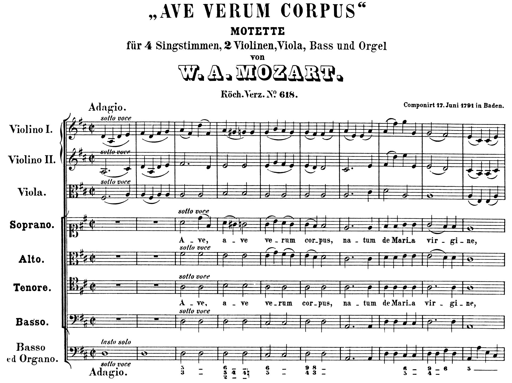
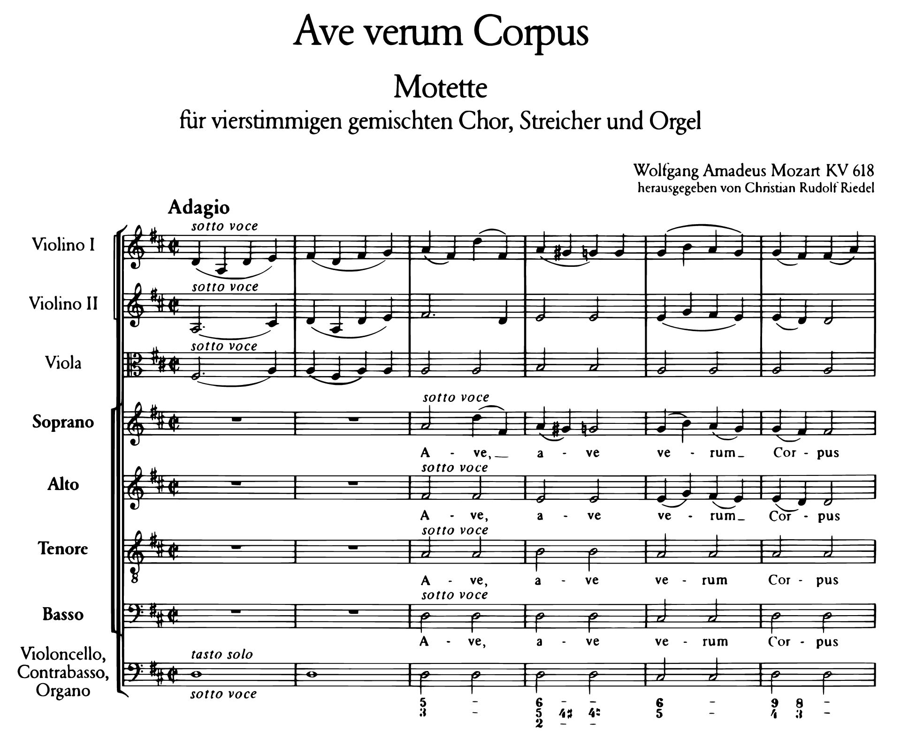
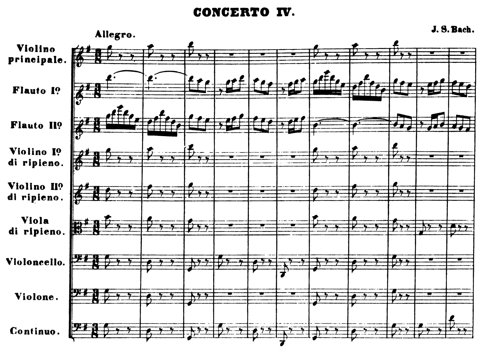
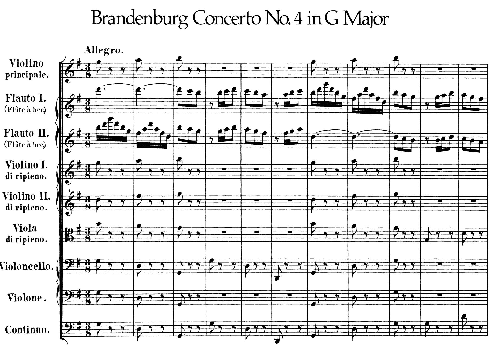
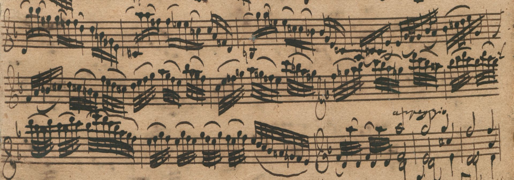
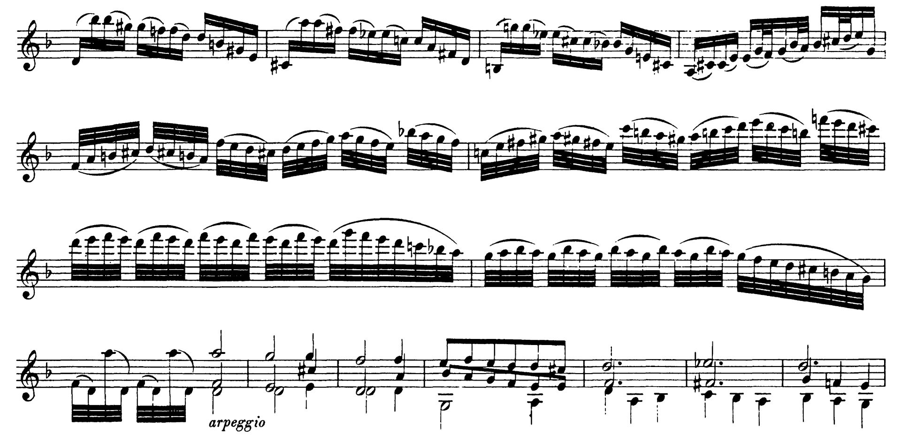
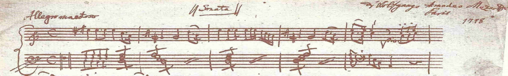
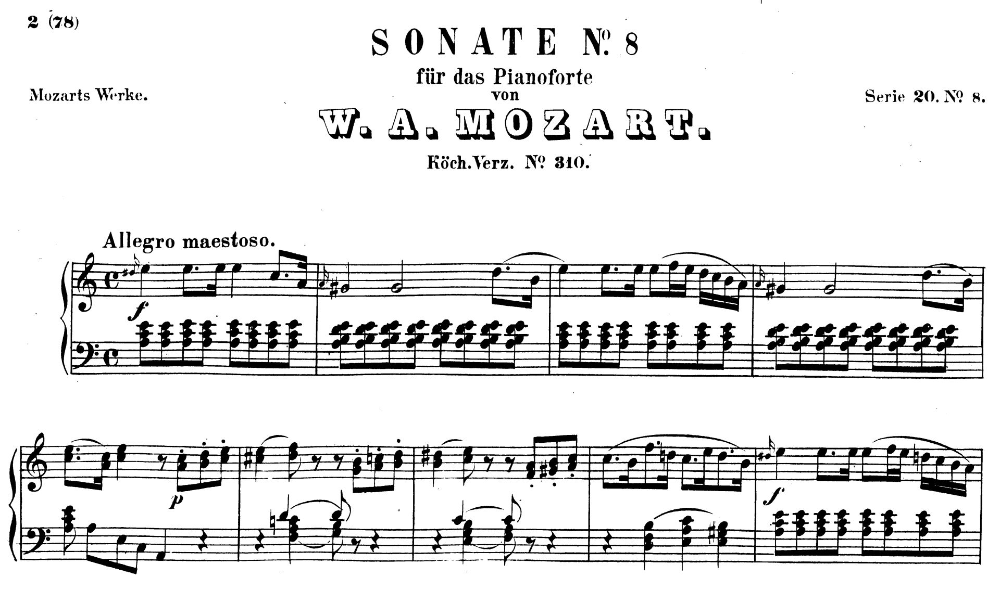
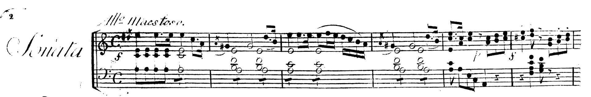

By understanding how the clefs work, you will be able to read notes in any clef without having to memorise where each note is.
You will even be able to read notes in clefs you've never seen before. In older editions and especially in manuscripts, you may find some more unusual clefs. Remember that different clefs are used to centre the staff on different registers and avoid ledger lines. In handwritten music, too many ledger lines can get extremely annoying to write, as each one has to be drawn specially. Besides, if you write music very far above one staff, you can run into space issues with the staff above. With modern notation software, none of that is an issue. The inconvenience of writing ledger lines has largely disappeared. For this reason, musicians used to be trained to read music fluently in many more clefs than we are now. The inconvenience of reading music with too many ledger lines has not disappeared, so it is still useful to have several clefs.
Here are some examples of other clefs that we haven't seen before, but that you should be able to work out.
C clef on the first line (known as soprano clef) is used for soprano voices, among other things. Although it is currently not often used, it used to be very common, so you are likely to encounter it in older editions.
Here is the beginning of Mozart's Ave Verum Corpus. It is written for choir (Soprano, Alto, Tenor and Bass), strings and organ. Notice that in the choir parts, the soprano is in soprano clef, the alto in alto clef, the tenor in tenor clef, and the bass in bass clef. This used to be the conventional way of writing for voices.

Here is the same excerpt from a newer edition. Here the soprano and alto are in treble clef, and the bass is still in bass clef. The tenor is in a treble clef which has an 8 underneath. This means that it should be read as if it were treble clef but an octave lower. This is the modern conventional way of writing for voices.

G clef on the first line (known as french clef or french violin clef) was used fairly often in the baroque period for recorder parts and often by French composers for violin parts.
Here's an example from J. S. Bach's Brandenburg concerto no. 4. The two recorder parts (2nd and 3rd staves) were originally written in French clef, as seen below.

Newer editions replace it with treble clef, as seen below:

Here are some curious examples of clefs being used in unconventional ways in manuscripts by Bach and Mozart.
In this passage of Bach's Chaconne for solo violin, the composer changes from treble clef to french clef for two and a half bars, before going back to treble clef. Presumably he did this to save himself having to write an extra ledger line and to prevent those notes from running into the notes on the line above.

Printed editions ignore this clef change and just keep the whole thing in treble clef.

Piano music usually uses a grand staff with treble clef on the top staff and bass clef on the bottom staff. However, in the mauscript of Mozart's Piano Sonata no.8 in A minor, the left-hand staff begins in tenor clef. Mozart writes a bass clef at the beginning of the staff and then changes the clef before the first note. In bar 5, as the register falls lower, he changes to bass clef.

Printed editions have the bottom staff in bass clef, but then the notes in the left hand require some ledger lines.

Some editions put some of the left-hand notes in the top staff, as they fit the treble clef register slightly better. This is not meant to suggest that those notes should be played by the right hand. It is purely to do with the layout of the score.
